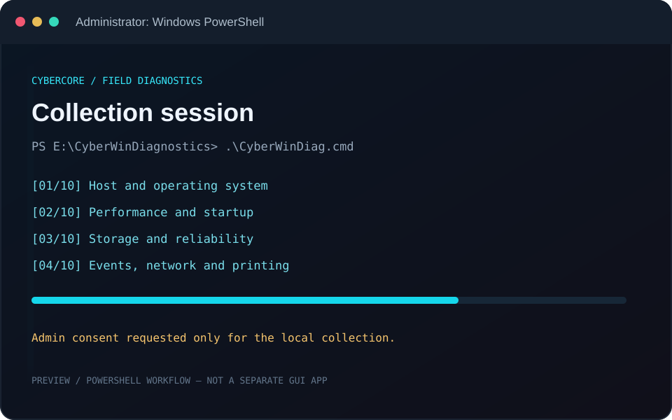
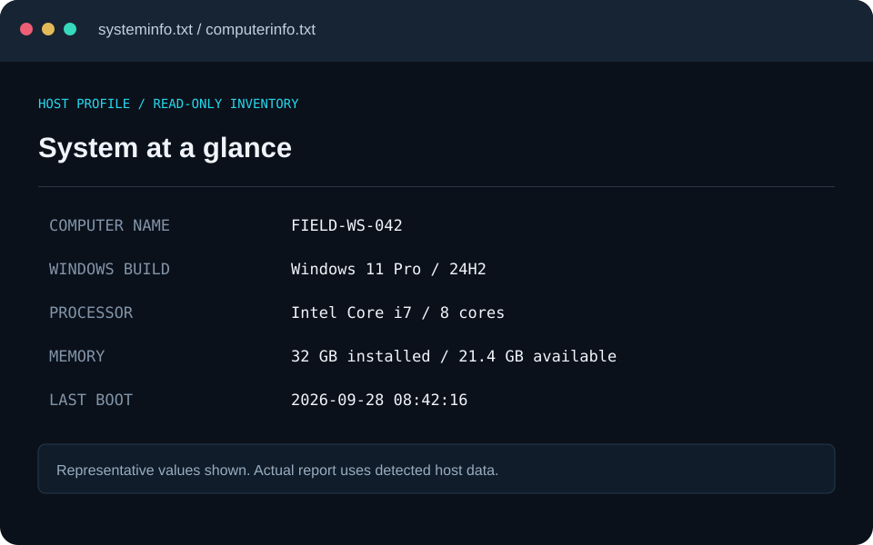
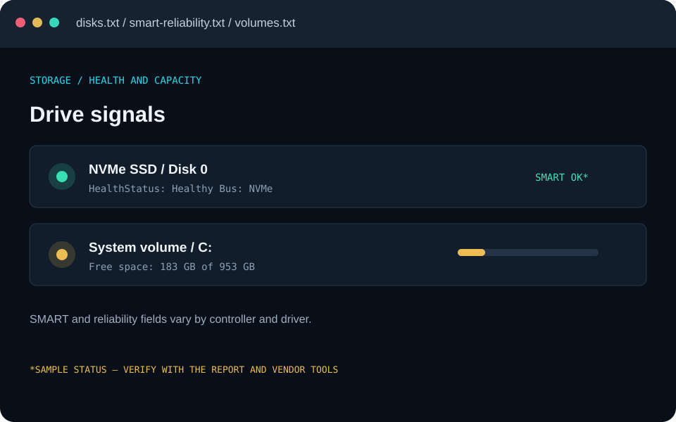
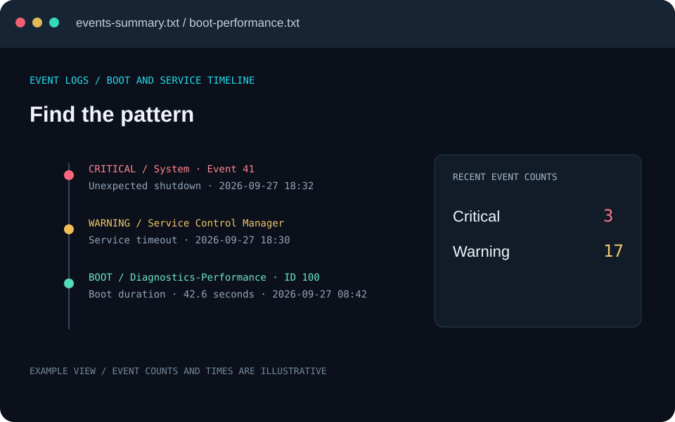
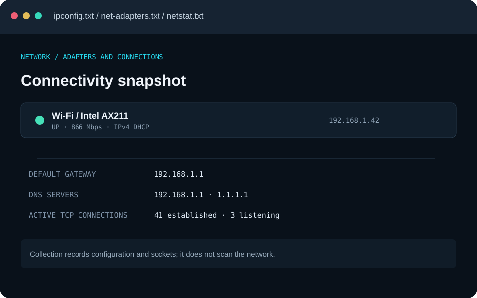
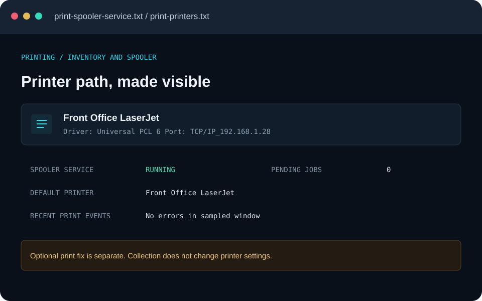
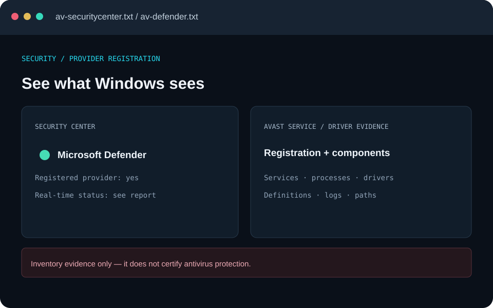
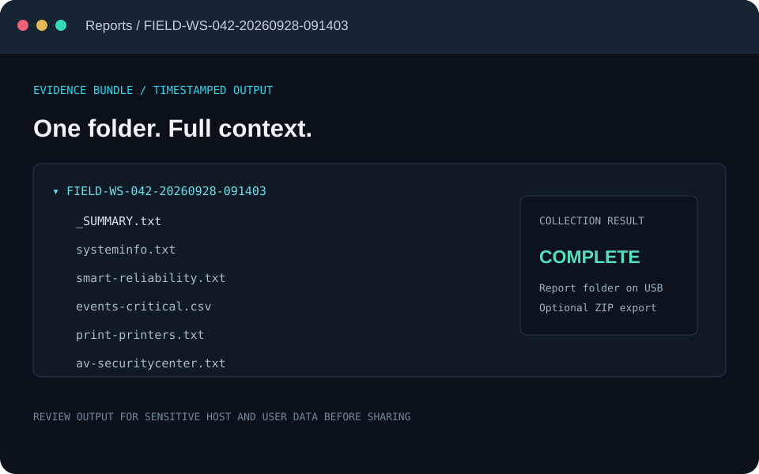

01 / INVENTORYHOST
Know the box.
Windows build, hardware, memory, processors, services, drivers, software, and startup items.
OS · CPU · RAM · DRIVERS
A careful Windows diagnostic runbook and PowerShell collector, built for the moments when a machine is slow, printing is stuck, or the evidence just doesn’t add up.
curl -fsSL https://raw.githubusercontent.com/cybercore-tech/CyberWinDiagnostics/main/install.sh | sh -s --ILLUSTRATIVE COLLECTION FLOW / READ-ONLY BY DEFAULT
01 / WHAT IT SEES
Stop guessing between disconnected symptoms. Capture the system, its history, and the pieces most likely to explain the complaint — in one timestamped evidence folder.
Windows build, hardware, memory, processors, services, drivers, software, and startup items.
Boot history, top processes, counters, scheduled tasks, power plan, battery, and optional reports.
Physical disks, volumes, SMART signals where available, free space, trim status, and system scans.
Critical events, hardware faults, service timeouts, and boot performance from Windows logs.
Adapters, IP and DNS configuration, network settings, and current socket state.
Spooler state, printers, ports, drivers, jobs, configuration, and print-service events.
02 / INSIDE THE FIELD KIT
A visual tour of the collector’s actual output areas. The sample host names and readings in these previews are illustrative; the tool records what it finds on the target PC.

↗Launch the collector from the USB. It gathers evidence without changing system settings by default.

↗OS build, computer details, CPU, memory, updates, software, and startup entries.

↗Disk inventory, volumes, available reliability signals, capacity, and scan results.

↗Event summaries and critical records help connect symptoms to a timeline.

↗Adapter state, IP and DNS configuration, and current connections in one place.

↗Spooler, printers, jobs, drivers, ports, and related Windows print events.

↗Security Center, Defender, and Avast service evidence — for review, not a protection guarantee.

↗Readable text and CSV outputs land in a timestamped folder on the toolkit drive.
i These are designed report previews, not captures from a live customer PC. Example names and values are fictional; the real collector saves raw output from Windows.
03 / THE OPERATING MODEL
Built for a technician’s workflow: understand the complaint, collect carefully, review the output, and get consent before any remediation.
Record symptoms and context before changing anything.
Use the included launcher. Admin elevation supports deeper Windows inventory.
Review the timestamped report, then map findings back to the complaint.
Remediation is separate and explicit. Back up first; make one change at a time.
The main collector is read-only unless optional integrity scans are requested. The separate printer-fix script can alter settings; inspect its help and use -WhatIf where supported.
Portable Windows diagnostics from Cybercore Tech. Run locally, read carefully, work with consent.